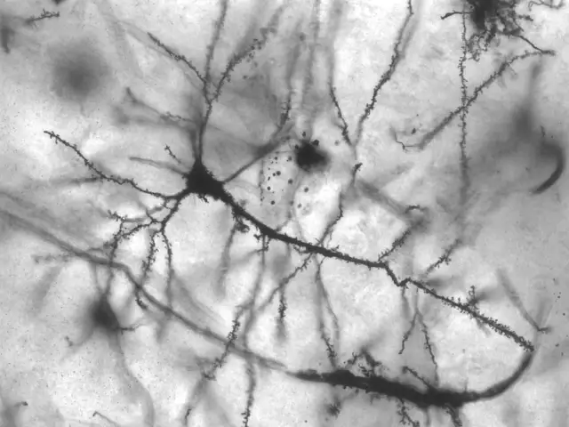

Themenfeld 3.6 · Bau und Funktion des Nervensystems
Biologie · Jahrgang 9 · Nr. 6, Teil 2 · Pflichtuntersuchung
Do Now · Wiederholung
1Beschrifte die Bauteile 1 bis 5. Schreibe in dein Heft: 1 = …
1 Dendriten · 2 Zellkörper · 3 Axon · 4 Myelinscheide · 5 Endknöpfchen
Impuls

Links: eigene Zeichnung, CC BY 4.0. Rechts: gefärbte Nervenzelle aus dem Gehirn, 40-fach. Foto: MethoxyRoxy, Wikimedia Commons, CC BY-SA 2.5, verkleinert.
Fragenentwicklung
Erarbeitung I
Prüft zu zweit jeden Schritt am Mikroskop. Tippt an, was erledigt ist.
Das kennt ihr aus Klasse 7. Die Lehrkraft liest die Schritte einmal vor.
Erarbeitung II
1Suche eine Nervenzelle bei 100-facher Vergrößerung (Objektiv 10× mal Okular 10×).
2Zeichne die Nervenzelle mit Bleistift. Beschrifte zwei Bauteile, die du wirklich siehst.●○○
3Zeichne nach den Zeichenregeln. Beschrifte alles, was du sicher erkennst.●●○
4Schätze die Größe des Zellkörpers ab. Das Sichtfeld ist bei 100-fach etwa 1,8 mm breit.●●●
Ohne Präparat: Zeichnet nach dem Foto M2 im Lernmodul „Die Nervenzelle“.
Sicherung
1Vergleiche deine Zeichnung mit dem Schema. Nenne zwei Gemeinsamkeiten und zwei Unterschiede.●●○
| Im Mikroskop | Im Schema | |
|---|---|---|
| Zellkörper und Zellkern | zu sehen | zu sehen |
| Fortsätze | viele, oft abgeschnitten | Dendriten und ein Axon, ordentlich |
| Myelinscheide, Endknöpfchen | meist nicht zu erkennen | eingezeichnet |
| Signalrichtung | nicht zu sehen | mit Pfeil gezeigt |
Transfer
1Erläutere, warum Biologiebücher meist ein Schema zeigen und kein Foto.●●○
2Nenne eine Grenze des Schemas: Was zeigt es falsch oder gar nicht?●●●
Reflexion
1Notiere, was dir das Mikroskop gezeigt hat, das Schema nicht.
Danach: Präparate zurücklegen, Lampe aus, Mikroskop mit beiden Händen in den Schrank.